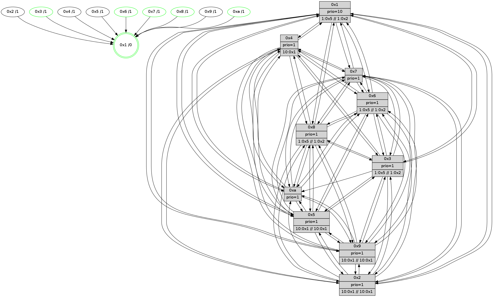

>> << IDX [start] -100 -25 -5 +0 +5 +25 +100 [540.298314095]
 Previous packets
----------------------------------------------------------------------
535.569524 beacon01(faad) #0 coord=01,02,03,04,05,06,07,0a,09,08 cycle=688.0ms assoc
-- color-indic=1 64 07 1e
535.579506 beacon02(faad) #0 coord=01,02,03,04,05,06,07,0a,09,08 cycle=688.0ms assoc 64 94 2f
535.589505 beacon03(faad) #0 coord=01,02,03,04,05,06,07,0a,09,08 cycle=688.0ms assoc 64 ee 62
535.599508 beacon04(faad) #0 coord=01,02,03,04,05,06,07,0a,09,08 cycle=688.0ms assoc 64 99 88
535.609508 beacon05(faad) #0 coord=01,02,03,04,05,06,07,0a,09,08 cycle=688.0ms assoc 64 e3 c5
535.619507 beacon06(faad) #0 coord=01,02,03,04,05,06,07,0a,09,08 cycle=688.0ms assoc 64 6d 12
535.629507 beacon07(faad) #0 coord=01,02,03,04,05,06,07,0a,09,08 cycle=688.0ms assoc 64 17 5f
535.639512 beacon0a(faad) #0 coord=01,02,03,04,05,06,07,0a,09,08 cycle=688.0ms assoc 64 66 54
535.649511 beacon09(faad) #0 coord=01,02,03,04,05,06,07,0a,09,08 cycle=688.0ms assoc 64 e8 83
535.659513 beacon08(faad) #0 coord=01,02,03,04,05,06,07,0a,09,08 cycle=688.0ms assoc 64 92 ce
535.673760 [Hello(8): seq=288 sym=5,2,3,4,7,6,9,10,1 sysInfo=coloring-mode-on,ColoringModeIndicationCalled stat=5:8,5,6,4/2:1,7,7,4/3:14,12,6,5/4:4,8,7,4/7:8,10,8,3/6:11,2,9,4/9:8,6,6,3/10:4,5,5,4/1:10,1,14,0]
535.676381 [Hello(4): seq=345 sym=5,7,6,2,9,8,10,1 sysInfo= stat=5:12,5,6,5/7:10,12,9,2/6:14,3,8,4/2:7,8,6,4/9:10,4,4,2/8:7,14,10,3/10:7,6,7,3/1:1,15,15,0]
535.678643 [Color(1) seq=25 @0:0 prio=10 >1.@2,1.@3,1.@4,1.@5 >>10.@1,1.@2,1.@3]
535.681558 PARSE ERROR************************
Traceback (most recent call last):
File "PacketAnalysis.py", line 167, in showOperaPacket
structPacket = OperaPacketParse.parsePacket(rawPacket)
File "../../pkg-python/HipSens/Core/OperaPacketParse.py", line 461, in parsePacket
return parseHelloMessage(data)
File "../../pkg-python/HipSens/Core/OperaPacketParse.py", line 127, in parseHelloMessage
assert struct.calcsize("H")*len(neighAddrList) == len(linkList)
AssertionError
48 34 03 00 01 59 00 02 02 12 01 00 07 00 06 00 02 00 04 00 08 00 09 00 0a 00 05 00 53 04 00 14 00 00 4c 12 0d 2d 26 df 46 e3 57 65 36 89 02 35 49 5b 23 36 47 59 4c 70
535.685787 [Hello(2): seq=342 sym=4,5,7,6,9,8,10,1 sysInfo=hasWarning stat=4:3,7,6,1/5:6,5,5,3/7:6,14,9,2/6:11,4,8,3/9:9,3,4,1/8:2,6,1,0/10:7,5,3,2/1:0,12,12,0]
535.690981 [Hello(10): seq=277 sym=6,3,2,8,9,5,7,4,1 sysInfo= stat=6:15,4,7,3/3:1,0,7,5/2:10,7,4,5/8:1,0,7,2/9:11,6,6,3/5:6,5,5,4/7:10,13,7,2/4:2,9,4,5/1:7,15,13,0]
----------------------------------------------------------------------
536.357657 beacon01(faad) #0 coord=01,02,03,04,05,06,07,0a,09,08 cycle=688.0ms assoc
-- color-indic=1 64 c3 10
536.367639 beacon02(faad) #0 coord=01,02,03,04,05,06,07,0a,09,08 cycle=688.0ms assoc 64 50 21
536.377639 beacon03(faad) #0 coord=01,02,03,04,05,06,07,0a,09,08 cycle=688.0ms assoc 64 2a 6c
536.387640 beacon04(faad) #0 coord=01,02,03,04,05,06,07,0a,09,08 cycle=688.0ms assoc 64 5d 86
536.397642 beacon05(faad) #0 coord=01,02,03,04,05,06,07,0a,09,08 cycle=688.0ms assoc 64 27 cb
536.407639 beacon06(faad) #0 coord=01,02,03,04,05,06,07,0a,09,08 cycle=688.0ms assoc 64 a9 1c
536.417641 beacon07(faad) #0 coord=01,02,03,04,05,06,07,0a,09,08 cycle=688.0ms assoc 64 d3 51
536.427645 beacon0a(faad) #0 coord=01,02,03,04,05,06,07,0a,09,08 cycle=688.0ms assoc 64 a2 5a
536.437646 beacon09(faad) #0 coord=01,02,03,04,05,06,07,0a,09,08 cycle=688.0ms assoc 64 2c 8d
536.447646 beacon08(faad) #0 coord=01,02,03,04,05,06,07,0a,09,08 cycle=688.0ms assoc 64 56 c0
536.459547 [Hello(1): seq=254 sym=4,2,9,5,10,3,8,6,7 sysInfo=coloring-mode-on,ColoringModeRequestCalled stat=4:11,11,9,5/2:9,9,10,6/9:7,9,11,5/5:5,10,9,6/10:12,12,9,4/3:11,1,11,6/8:13,0,13,3/6:12,5,11,3/7:7,14,12,5]
536.462264 [Color(8) seq=25 @0:0 prio=1 >10.@1,1.@2,1.@3,1.@4 >>10.@1,1.@2,1.@3]
536.464186 [Hello(6): seq=345 sym=2,3,5,4,7,9,8,10,1 sysInfo=coloring-mode-on,ColoringModeIndicationCalled stat=2:10,5,10,4/3:14,11,8,3/5:14,5,8,6/4:12,6,7,4/7:2,11,8,2/9:10,7,9,5/8:9,7,9,3/10:10,4,11,4/1:10,6,11,0]
536.467660 [Color(6) seq=25 @0:0 prio=1 >10.@1,1.@2,1.@3,1.@4 >>10.@1,1.@2,1.@3]
536.470915 [Hello(7): seq=345 sym=2,3,5,6,4,8,9,10,1 sysInfo= stat=2:12,2,10,7/3:8,8,9,5/5:8,3,9,7/6:4,9,1,2/4:2,3,8,4/8:9,12,10,2/9:5,2,9,6/10:10,2,10,4/1:10,5,11,0]
536.476610 [Color(10) seq=14 @0:0 prio=1]
536.482641 [Color(3) seq=25 @0:0 prio=1 >10.@1,1.@2,1.@4,1.@5 >>10.@1,1.@2,1.@3]
----------------------------------------------------------------------
537.145788 beacon01(faad) #0 coord=01,02,03,04,05,06,07,0a,09,08 cycle=688.0ms assoc
-- color-indic=1 64 7f 15
537.155771 beacon02(faad) #0 coord=01,02,03,04,05,06,07,0a,09,08 cycle=688.0ms assoc 64 ec 24
537.165772 beacon03(faad) #0 coord=01,02,03,04,05,06,07,0a,09,08 cycle=688.0ms assoc 64 96 69
537.175772 beacon04(faad) #0 coord=01,02,03,04,05,06,07,0a,09,08 cycle=688.0ms assoc 64 e1 83
537.185771 beacon05(faad) #0 coord=01,02,03,04,05,06,07,0a,09,08 cycle=688.0ms assoc 64 9b ce
537.195770 beacon06(faad) #0 coord=01,02,03,04,05,06,07,0a,09,08 cycle=688.0ms assoc 64 15 19
537.205772 beacon07(faad) #0 coord=01,02,03,04,05,06,07,0a,09,08 cycle=688.0ms assoc 64 6f 54
537.215777 beacon0a(faad) #0 coord=01,02,03,04,05,06,07,0a,09,08 cycle=688.0ms assoc 64 1e 5f
537.225776 beacon09(faad) #0 coord=01,02,03,04,05,06,07,0a,09,08 cycle=688.0ms assoc 64 90 88
537.235777 beacon08(faad) #0 coord=01,02,03,04,05,06,07,0a,09,08 cycle=688.0ms assoc 64 ea c5
537.246943 [Hello(2): seq=343 sym=4,5,7,6,9,8,10,1 sysInfo=hasWarning stat=4:3,7,6,1/5:6,5,5,3/7:7,14,9,2/6:12,5,8,3/9:9,3,4,1/8:2,7,1,0/10:8,6,3,2/1:1,12,12,0]
537.249232 [Hello(3): seq=346 sym=1,7,6,2,4,8,9,10,5 sysInfo=coloring-mode-on,ColoringModeIndicationCalled stat=1:14,2,13,0/7:15,13,6,2/6:3,14,6,4/2:6,6,7,5/4:9,8,6,3/8:5,3,2,0/9:11,5,9,4/10:7,3,3,2/5:9,5,7,4]
537.252518 [Hello(5): seq=346 sym=7,6,4,3,1,9,8,10,2 sysInfo= stat=7:10,12,9,2/6:13,5,9,3/4:2,9,6,3/3:3,9,1,0/1:4,14,12,0/9:1,6,7,3/8:2,7,2,1/10:15,8,6,3/2:5,7,6,3]
537.255925 [Hello(10): seq=278 sym=6,3,2,8,9,5,7,4,1 sysInfo= stat=6:15,4,7,3/3:1,1,7,5/2:10,7,4,5/8:1,0,7,2/9:11,6,6,3/5:6,5,5,4/7:10,13,7,2/4:2,9,4,5/1:8,15,13,0]
537.258912 [Hello(8): seq=289 sym=5,2,3,4,7,6,9,10,1 sysInfo=coloring-mode-on,ColoringModeIndicationCalled stat=5:8,5,6,4/2:2,7,7,4/3:15,13,6,5/4:5,8,7,4/7:9,10,8,3/6:12,3,9,4/9:8,6,6,3/10:5,6,5,4/1:11,1,14,0]
537.262390 [Hello(4): seq=346 sym=5,7,6,2,3,9,8,10,1 sysInfo= stat=5:12,5,6,5/7:11,12,9,2/6:15,4,8,4/2:8,8,6,4/3:0,1,0,0/9:10,4,4,2/8:7,15,10,3/10:8,7,7,3/1:2,0,15,0]
537.265581 [Hello(9): seq=289 sym=5,2,3,4,7,6,8,10,1 sysInfo=hasWarning stat=5:6,5,4,5/2:4,8,7,3/3:10,4,4,3/4:10,7,5,4/7:15,12,9,1/6:6,1,7,3/8:8,0,5,1/10:5,5,6,4/1:13,13,13,0]
537.269916 [STC(1) #0.21 tree-change,inconsistent-stability,stable,to-color d=0]
537.271531 [Color(1) seq=26 @0:0 prio=10 >1.@5,1.@6,1.@7,1.@8 >>1.@2,1.@3,1.@4]
----------------------------------------------------------------------
537.933919 beacon01(faad) #0 coord=01,02,03,04,05,06,07,0a,09,08 cycle=688.0ms assoc
-- color-indic=1 64 4b 0d
537.943902 beacon02(faad) #0 coord=01,02,03,04,05,06,07,0a,09,08 cycle=688.0ms assoc 64 d8 3c
537.953902 beacon03(faad) #0 coord=01,02,03,04,05,06,07,0a,09,08 cycle=688.0ms assoc 64 a2 71
537.963902 beacon04(faad) #0 coord=01,02,03,04,05,06,07,0a,09,08 cycle=688.0ms assoc 64 d5 9b
537.973904 beacon05(faad) #0 coord=01,02,03,04,05,06,07,0a,09,08 cycle=688.0ms assoc 64 af d6
537.983902 beacon06(faad) #0 coord=01,02,03,04,05,06,07,0a,09,08 cycle=688.0ms assoc 64 21 01
537.993904 beacon07(faad) #0 coord=01,02,03,04,05,06,07,0a,09,08 cycle=688.0ms assoc 64 5b 4c
538.003908 beacon0a(faad) #0 coord=01,02,03,04,05,06,07,0a,09,08 cycle=688.0ms assoc 64 2a 47
538.013906 beacon09(faad) #0 coord=01,02,03,04,05,06,07,0a,09,08 cycle=688.0ms assoc 64 a4 90
538.023909 beacon08(faad) #0 coord=01,02,03,04,05,06,07,0a,09,08 cycle=688.0ms assoc 64 de dd
538.034849 [Hello(1): seq=255 sym=4,2,9,5,10,3,8,6,7 sysInfo=coloring-mode-on,ColoringModeRequestCalled stat=4:11,11,9,5/2:10,9,10,6/9:7,9,11,5/5:5,10,9,6/10:12,13,9,4/3:11,2,11,6/8:13,1,13,3/6:13,6,11,3/7:8,14,12,5]
538.037569 [Hello(7): seq=346 sym=2,3,5,6,4,8,9,10,1 sysInfo= stat=2:13,2,10,7/3:8,9,9,5/5:9,3,9,7/6:4,9,1,2/4:3,3,8,4/8:10,12,10,2/9:6,2,9,6/10:11,3,10,4/1:10,6,12,0]
538.040070 [STC(3)->1 #0.21 tree-change,inconsistent-stability,stable,to-color d=1]
538.041386 [STC(10)->1 #0.21 tree-change,inconsistent-stability,stable,to-color d=1]
538.043127 [Color(3) seq=26 @0:0 prio=1 >1.@5,1.@6,1.@7,1.@8 >>1.@2,1.@3,1.@4]
538.045214 [STC(8)->1 #0.21 tree-change,inconsistent-stability,stable,to-color d=1]
538.047161 [Color(8) seq=26 @0:0 prio=1 >1.@5,1.@6,1.@7,1.@9 >>1.@2,1.@3,1.@4]
538.049500 [STC(9)->1 #0.21 tree-change,inconsistent-stability,to-color d=1]
538.050903 [STC(7)->1 #0.21 tree-change,inconsistent-stability,stable,to-color d=1]
538.052387 [STC(2)->1 #0.21 tree-change,inconsistent-stability,to-color d=1]
538.054476 [TreeStatus(7)-.->1 #0.21 tree-change,inconsistent-stability,stable child=1]
538.058474 [Color(10) seq=15 @0:0 prio=1]
538.062549 [STC(4)->1 #0.21 tree-change,inconsistent-stability,to-color d=1]
538.067714 [Hello(6): seq=346 sym=2,3,5,4,7,9,8,10,1 mpr= sysInfo=coloring-mode-on,ColoringModeIndicationCalled stat=2:11,5,10,4/3:14,12,8,3/5:15,5,8,6/4:13,6,7,4/7:3,11,8,2/9:11,7,9,5/8:10,7,9,3/10:11,5,11,4/1:11,7,12,0]
538.072475 [STC(6)->1 #0.21 tree-change,inconsistent-stability,stable,to-color d=1]
538.074437 [Color(6) seq=26 @0:0 prio=1 >1.@5,1.@7,1.@8,1.@9 >>1.@2,1.@3,1.@4]
----------------------------------------------------------------------
538.722051 beacon01(faad) #0 coord=01,02,03,04,05,06,07,0a,09,08 cycle=688.0ms assoc
-- color-indic=1 64 f7 08
538.732034 beacon02(faad) #0 coord=01,02,03,04,05,06,07,0a,09,08 cycle=688.0ms assoc 64 64 39
538.742034 beacon03(faad) #0 coord=01,02,03,04,05,06,07,0a,09,08 cycle=688.0ms assoc 64 1e 74
538.752034 beacon04(faad) #0 coord=01,02,03,04,05,06,07,0a,09,08 cycle=688.0ms assoc 64 69 9e
538.762034 beacon05(faad) #0 coord=01,02,03,04,05,06,07,0a,09,08 cycle=688.0ms assoc 64 13 d3
538.772035 beacon06(faad) #0 coord=01,02,03,04,05,06,07,0a,09,08 cycle=688.0ms assoc 64 9d 04
538.782033 beacon07(faad) #0 coord=01,02,03,04,05,06,07,0a,09,08 cycle=688.0ms assoc 64 e7 49
538.792040 beacon0a(faad) #0 coord=01,02,03,04,05,06,07,0a,09,08 cycle=688.0ms assoc 64 96 42
538.802039 beacon09(faad) #0 coord=01,02,03,04,05,06,07,0a,09,08 cycle=688.0ms assoc 64 18 95
538.812039 beacon08(faad) #0 coord=01,02,03,04,05,06,07,0a,09,08 cycle=688.0ms assoc 64 62 d8
538.823212 [Hello(2): seq=344 sym=4,5,7,6,3,9,8,10,1 sysInfo=hasWarning stat=4:4,7,7,1/5:7,5,5,3/7:7,14,9,3/6:13,6,9,3/3:0,0,0,0/9:10,3,4,1/8:3,7,1,0/10:9,7,3,2/1:1,13,13,0]
538.826213 [Hello(9): seq=290 sym=5,2,3,4,7,6,8,10,1 sysInfo=hasWarning stat=5:6,5,4,5/2:4,8,8,3/3:10,4,4,3/4:10,7,6,4/7:15,12,10,2/6:7,2,8,3/8:8,0,5,1/10:5,6,6,4/1:13,14,14,0]
538.829262 [Color(1) seq=27 @0:0 prio=10 >1.@5,1.@6,1.@7,1.@8 >>1.@2,1.@3,1.@4]
538.831480 [Hello(5): seq=347 sym=7,6,4,3,1,9,8,10,2 sysInfo= stat=7:10,12,10,3/6:14,6,10,3/4:3,9,7,3/3:3,10,1,0/1:4,15,13,0/9:2,6,8,3/8:3,8,3,1/10:0,9,7,3/2:5,7,7,3]
538.834033 [Hello(4): seq=347 sym=5,7,6,2,3,9,8,10,1 sysInfo= stat=5:12,5,6,5/7:11,12,9,2/6:0,5,9,4/2:8,8,6,4/3:0,1,0,0/9:11,4,4,2/8:7,15,10,3/10:8,7,7,3/1:2,1,0,0]
538.842290 [Hello(10): seq=279 sym=6,8,9,5,7,4,1 sysInfo= stat=6:0,5,8,3/8:2,0,7,2/9:12,6,6,3/5:6,5,5,4/7:11,13,7,2/4:3,9,5,5/1:9,0,14,0]
----------------------------------------------------------------------
539.510183 beacon01(faad) #0 coord=01,02,03,04,05,06,07,0a,09,08 cycle=688.0ms assoc
-- color-indic=1 64 33 06
539.520166 beacon02(faad) #0 coord=01,02,03,04,05,06,07,0a,09,08 cycle=688.0ms assoc 64 a0 37
539.530166 beacon03(faad) #0 coord=01,02,03,04,05,06,07,0a,09,08 cycle=688.0ms assoc 64 da 7a
539.540166 beacon04(faad) #0 coord=01,02,03,04,05,06,07,0a,09,08 cycle=688.0ms assoc 64 ad 90
539.550166 beacon05(faad) #0 coord=01,02,03,04,05,06,07,0a,09,08 cycle=688.0ms assoc 64 d7 dd
539.560166 beacon06(faad) #0 coord=01,02,03,04,05,06,07,0a,09,08 cycle=688.0ms assoc 64 59 0a
539.570167 beacon07(faad) #0 coord=01,02,03,04,05,06,07,0a,09,08 cycle=688.0ms assoc 64 23 47
539.580169 beacon0a(faad) #0 coord=01,02,03,04,05,06,07,0a,09,08 cycle=688.0ms assoc 64 52 4c
539.590170 beacon09(faad) #0 coord=01,02,03,04,05,06,07,0a,09,08 cycle=688.0ms assoc 64 dc 9b
539.600172 beacon08(faad) #0 coord=01,02,03,04,05,06,07,0a,09,08 cycle=688.0ms assoc 64 a6 d6
539.613353 [Hello(1): seq=256 sym=4,2,9,5,10,3,8,6,7 sysInfo=coloring-mode-on,ColoringModeRequestCalled stat=4:12,11,10,5/2:11,9,11,6/9:7,9,12,5/5:6,10,9,6/10:13,14,10,4/3:12,3,12,6/8:13,2,14,3/6:14,7,12,3/7:9,14,13,6]
539.616074 [Color(8) seq=27 @0:0 prio=1 >1.@5,1.@6,1.@7,1.@9 >>1.@2,1.@3,1.@4]
539.619414 PARSE ERROR************************
Traceback (most recent call last):
File "PacketAnalysis.py", line 167, in showOperaPacket
structPacket = OperaPacketParse.parsePacket(rawPacket)
File "../../pkg-python/HipSens/Core/OperaPacketParse.py", line 461, in parsePacket
return parseHelloMessage(data)
File "../../pkg-python/HipSens/Core/OperaPacketParse.py", line 127, in parseHelloMessage
assert struct.calcsize("H")*len(neighAddrList) == len(linkList)
AssertionError
48 34 06 00 01 5b 00 02 02 12 02 00 03 00 05 00 04 00 07 00 09 00 08 00 0a 00 01 00 53 04 00 14 00 00 4c 12 4a 5c 38 ce 68 50 47 6e 28 b4 59 7c 39 7b 4b 5c 0c 8c 4c 7b
539.622288 [Color(10) seq=16 @0:0 prio=1]
539.629783 [Hello(7): seq=347 sym=2,3,5,6,4,8,9,10,1 sysInfo= stat=2:14,2,10,7/3:9,9,9,5/5:10,3,9,7/6:5,10,2,2/4:4,3,9,4/8:10,12,10,2/9:7,2,9,6/10:12,4,10,4/1:11,7,12,0]
539.633650 [Color(3) seq=27 @0:0 prio=1 >1.@5,1.@6,1.@7,1.@8 >>1.@2,1.@3,1.@4]
539.638170 [Color(7) seq=15 @0:0 prio=1]